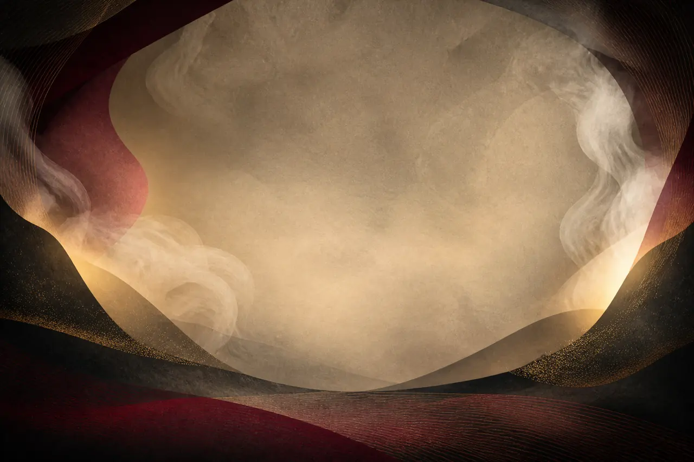

Проверка механики · выпуск 2
Трое русских лишили императора власти. Как?
Сначала вынеси вердикт по немой сцене. Затем верни три улики — и проверь, выдержит ли твой ответ.
Образовательная реконструкция, не исторический оригинал
Лаборатория взгляда
Карта власти в одной сцене

Современная образовательная реконструкцияКто сейчас управляет сценой?
Выбери по первому впечатлению. Ошибки нет: позже будет важна причина.
Твой вывод изменился?
После масштаба, действий и реплик выбери итоговый вердикт.
Поворот: известное имя и центральное положение могли назначить Наполеона главным. Но уменьшенный масштаб, направленные на него действия и реплики превращают его в объект чужого приговора.
Карикатура не просто «делает врага маленьким»: она распределяет физический контроль между всеми элементами сцены.
Пройти смысл без интерактива
Три состояния композиции
- Без деталей: центральная и крупная фигура Наполеона может казаться главной.
- После возвращения масштаба и предметов: Наполеон становится меньше, а действия других фигур направлены на него.
- После возвращения реплик: визуальное подчинение получает публичный сатирический приговор.
Вывод: масштаб важен, но власть в листе создаёт связка размера, действия и текста. Учебная схема не заменяет исторический оригинал.
Предметная опора: Иван Теребенев, «Наполеон в Русской бане», 1812–1813. Карточка Государственного Русского музея. Изображение музея в прототип не копировалось. Атмосферный фон создан ИИ для современной образовательной реконструкции; он не воспроизводит и не заменяет исторический лист.